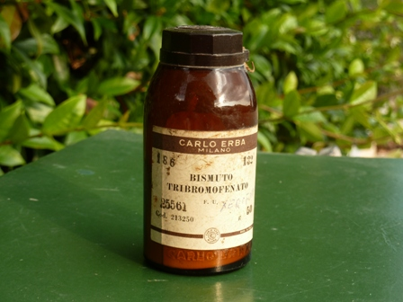
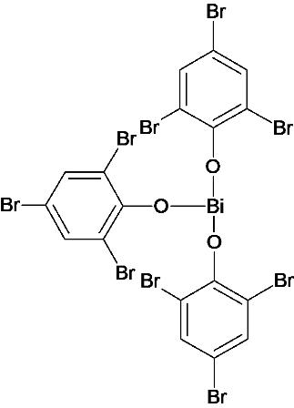
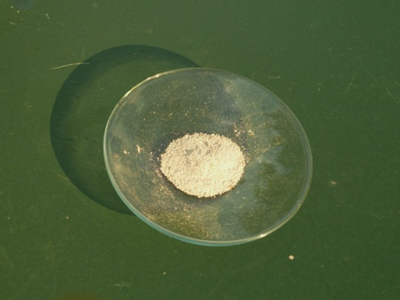
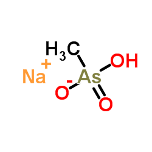

Sono andato qualche tempo fa, per curiosità, a vedere quel colossale mercatino dell'antiquariato che si svolge l'ultima domenica del mese a Piazzola sul Brenta.
Si tratta certamente del più grande mercatino italiano del genere, dato che le bancarelle (di ogni tipo merceologico) sono centinaia e centinaia... tutta la bella cittadina ne è invasa.
Guarda cosa ho trovato su una bancarella, assieme ad altre bottigliette:

Una antica confezione di Xeroformio, ovvero di Tribromofenato di bismuto!

La formula sopra riportata è come la dice il Merk Index, tuttavia altre fonti occupano una valenza del bismuto con un ossidrile, e lo chiamerei in tal caso tribromofenato basico, (C6H2Br3O)2BiOHAltre fonti aggiungono al bromofenato anche una molecola di ossido di bismuto, (C6H2Br3O)2BiOH.Bi2O3
Ritengo che il tutto derivi dai metodi di fabbricazione di questo vecchio composto, ed anche dalla predisposizione del bismuto a formare appena può sali basici.
Lo xeroformio è un buon antisettico, ancora usato, che si presenta come una polvere appena appena giallina con lieve odore "di disinfettante"; probabilmente il suffisso "formio" gli deriva dal più noto iodoformio e l'odore lo richiama infatti lievemente.
Arroventando il composto, la parte organica si decompone completamente (con abbondante fumata, agire in ambiente opportuno) lasciando un residuo di ossido di bismuto Bi2O3, nettamente giallo a caldo e grigio giallino a freddo.

L'ossido di bismuto così prodotto può essere usato per produrre qualche sale di questo metallo; esso si scioglie perfettamente in HCl formando BiCl3, il quale è stabile in ambiente cloridrico ma precipita immediatamente per diluizione come ossicloruro, BiOCl.
Per diluizione sono facilmente formati e stabili gli altri ossialogenuri BiOBr e BiOI.
Composti del bismuto assai interessanti sono i bismutati alcalini (Na-, KBiO3), dal potere ossidante tanto forte da riuscire facilmente a ossidare il manganese Mn2+ a permanganato MnO4- ed usati a tale scopo come antico metodo analitico.
Sempre affascinato da queste storiche procedure, vedrò se mi sarà possibile tentare di preparare una piccola quantità di NaBiO3, riferendo poi l'esito di questi esperimenti.
Per la cronaca: vicino alla bottiglietta di xeroformio ve ne era sulla bancarella un'altra ancora più interessante, che ho però lasciato dov'era perchè il contenuto era veramente pochino: si trattava di sodio metilarseniato

con il diabolico fascino dell'elemento trentatre...